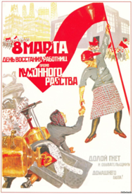

1. O Que é Comunicação?
Neste tópico nos debruçamos sobre o tema da comunicação recuperando algumas das fases históricas deste fenômeno, para, logo depois, realizarmos um exercício de tipificação das ferramentas analógicas e digitais como forma de entender melhor os instrumentos que mediam a troca de informações entre nós hoje em dia.
Noam Chomsky (2008) considera possível que o cérebro primata tenha sofrido uma espécie de reorganização a partir de uma mutação aleatória causada por alguma chuva de raios cósmicos estranhos. Essa situação teria implantado um órgão da linguagem nesse cérebro primata. Essa é mais uma hipótese em uma variedade de situações que teria gerado no homem a possibilidade de assimilação de captura e emissão de informações. O primeiro ato de comunicação não é precisamente revelado pelas pesquisas existentes no campo historiográfico, mas sabemos que a convivência entre os homens naquilo que conhecemos como sociedade se torna inviável sem a presença da interação entre os seus membros. A essa interação damos o nome de comunicação, que de forma genérica abarca desde a expressão corporal, passando pelo olhar, e chegando até a linguagem oral que é expressa a partir de línguas até a utilização de sons, à exemplo de um grito. Desde o nascimento estamos tão imersos em processos de comunicação que nos esquecemos disso. É como prestar atenção em nosso método de deslocamento através dos passos. É algo tão mecânico que realizamos a ação sem refletir sobre o procedimento de deslocamento. Entretanto se faz necessária a conceituação da comunicação à luz dos seus componentes: emissão, recepção, mensagem, canal de transmissão, meio de comunicação, resposta e ambiente onde é realizada a comunicação.
O fenômeno da comunicação é primeiramente o acontecimento que proporciona que nos socializemos em rede. "A comunicação é uma necessidade básica da pessoa humana, do homem social" (BORDENAVE, 2006: 19). Uma das mais evidentes defesas do utilitarismo da comunicação está em Gombrich (2011), onde o autor sustenta que mesmo o homem primitivo não via diferença entre edificar e fazer imagens. No contexto das pinturas rupestres que teriam sido realizadas entre 15.000 e 10.000 a.C. em Lascaux na França e Altamira Espanha, o autor destaca que, "suas cabanas existem para protegê-los da chuva, do sol e do vento, e para os espíritos que geram tais eventos; as imagens são feitas para protegê-los contra outros poderes que para eles são tão reais quanto as forças da natureza" (GOMBRICH, 2011: 39-40). Com efeito, podemos observar que a comunicação, desde os primórdios, é um ato utilitário para a manutenção da vida social.
Contraditoriamente, o fenômeno da comunicação foi muito tardiamente estudado. É sintomático que "durante dezenas de séculos, desde a Grécia clássica, nós nos contentemos, por exemplo, em não conhecer sistematicamente quase nada das nossas próprias línguas que fosse além do conhecimento dos seus léxicos e das suas gramáticas" (PUPPI, 2009: 14). A comunicação sempre foi um tema estratégico para projetos de centralização ou democratização de poder. Quem domina os códigos da comunicação pode ter influência sobre os demais membros da sociedade. Ao revisitarmos a Revolução Russa, de 1917, por exemplo, podemos observar que os cartazes de apoio ao evento pouco tinham de conteúdo textual. A propaganda soviética lançava mão de enfático conteúdo simbólico para se comunicar com uma maioria de iletrados.
{kind=link}
Cartaz do Dia Internacional da Mulher - 8 de março (Revolução Russa)
 Página 145Na figura anterior podemos observar a baixa quantidade de texto e a forte porcentagem de carga simbólica. Descritivamente podemos interpretar o cartaz a partir de uma trabalhadora organizada que dá a mão para uma mulher que está esmagada pelo mundo do trabalho. Os russos sabiam que tinham que ser entendidos pelas imagens que deveriam "discursar" diretamente ao povo. Deveriam ser inteligíveis às massas analfabetas. Os cartazes soviéticos operacionalizaram muito bem a lógica dos meios de comunicação de massa, onde uma informação é emitida de um pólo para vários outros pontos de recepção.
O fenômeno da comunicação é categorizado como o fundamento primordial para a vida social e a construção das relações entre as diferentes comunidades. No entanto, o advento dos meios de comunicação de massa acabou por centralizar a emissão da informação por dois motivos: vide as características natas dos meios, como o jornal impresso, os cartazes, o rádio e a televisão, combinado com a concepção unilateral que alguns grupos de comunicação aplicam em suas programações com objetivo de manipular as pessoas para a obtenção de fins econômicos.
A premissa dos "media mass" (meios de comunicação da massa) é de ter um ponto de emissão e vários pontos de recepção da informação. No jornal impresso e no cartaz existe uma matriz que repercute cópias que atingem os leitores em vários pontos de distribuição, onde o chassi da informação é físico e palpável. No rádio, são as ondas eletromagnéticas que são propagadas a partir de uma antena de transmissão e chegam aos rádios receptores atingindo de forma sonora os ouvintes. A televisão utiliza as mesmas ondas eletromagnéticas, só que os telespectadores são afetados por mensagens através do que se convencionou chamar de audiovisual, contemplando a sonoridade do rádio com a visualidade de imagens.
Ao longo da história, a pesquisa sobre os meios de comunicação de massa procurou levar em consideração aspectos relacionados ao contexto social, histórico e econômico, o tipo de teoria sociológica utilizada e o modelo do processo comunicativo. Em "Teorias da Comunicação", Mauro Wolf apresentou nove "momentos" dos estudos sobre os meios de comunicação de massa: A teoria hipodérmica, a teoria ligada à abordagem empírico-experimental, a teoria que deriva da pesquisa empírica de campo, a teoria de base estrutural-funcionalista, a teoria crítica dos "mass media", a teoria "culturológica", os "cultural studies" e as teorias comunicativas (WOLF, 2009: 22).
Citamos as teorias apresentadas por Mauro Wolf, não para aprofundarmos cada uma delas, pois este não é o foco deste artigo, mas para que possamos saber da diversidade e amplitude de vertentes teóricas que foram articuladas em torno da pesquisa dos meios de comunicação. Sem hierarquização, destacamos a teoria dos "mass media" (meios de massa) como uma importante corrente teórica por decifrar o que de mais contundente ocorreu em termos sociais em nossa sociedade.
Desde que os estudos sobre as comunicações de massa (corrente americana) começaram a desenvolver-se, o interesse do investigador incidiu, sobretudo na influência dos meios de comunicação sobre o público (ao passo que) a corrente européia pretendeu conhecer as determinantes estruturais do pensamento (MERTON, 1949: 84 apud WOLF, 2009: 17).
Página 146Entre a corrente "americana" e a "europeia" podemos constatar que tanto no estudo da influência dos meios sobre o público, como no entendimento das estruturas do pensamento, é conferido grande poder aos meios de comunicação de massa que tiveram e têm grande importância na construção das identidades nacionais, estabilizando crenças, valores, comportamentos e opiniões e influenciando nas regras e conclusões sobre a sociedade, a cultura, a economia e a política. Os meios de comunicação de massa são,
[...] instituições que exercem uma atividade-chave que consiste na produção, reprodução e distribuição de conhecimentos, que podem dar sentido ao mundo, moldam a nossa percepção e contribuem para o conhecimento passado e para dar continuidade à nossa compreensão presente (McQUAIL, 1983: 51 apud WOLF, 2009: 17).
Assim, os meios de massa ao moldarem nossa percepção acabam por determinar um conjunto de concepções por parte do público. Segundo a "Teoria do Balde" de David Berlo (1960), todo emissor esvazia um "balde de sentidos" sobre a cabeça do receptor. Tal metáfora utilizada por Berlo na década de 1960 nos Estados Unidos tinha grande proximidade com a metáfora da "educação bancária" elaborada por Paulo Freire no Brasil, na mesma época, para denunciar os procedimentos verticais que professores utilizavam para impor um conteúdo a partir de métodos autoritários, onde o estudante apenas recebia "depósitos" de conteúdos.
Com efeito, existe um entendimento sobre a comunicação que ficou impregnada com a ideia de que o público deve absorver informações, tanto que o espaço ao contraditório em noticiários e outros programas televisivos é substituído por opiniões "conclusivas" antes mesmo que pesquisas e investigações se concretizem. Esse entendimento, inclusive é ratificado pelas próprias emissoras como forma de reivindicar a prioridade em realizar a transmissão e conteúdos reservando sua parcela de poder de influência sobre os públicos. Isso acontece por que quem detém o poder da comunicação pode construir a opinião das audiências, ou seja, comunicação é poder.
Guareschi (2007: 16) nos lembra de que da mesma forma que o Brasil foi loteado a partir das capitanias hereditárias, doadas a famílias com alto grau de articulação e relação com o Império, existe hoje um loteamento dos meios de comunicação. No Brasil, um dado impressionante da centralização do poder midiático "onde nove famílias controlam mais de 90% da mídia eletrônica. As emissoras decidem o que deve ser dito e, principalmente, o que não deve ser dito, o que os brasileiros não podem e não devem saber" (GUARESCHI, 2007: 18). Desta forma, os meios de massa passam a ter um grande poder sobre a opinião da sociedade. Mas isso acontece com aquela parcela da sociedade que não utiliza os devidos "filtros" na interação com as emissoras, como, por exemplo, observar a veracidade dos fatos por variados meios e fontes de informação. Um antídoto é apresentado por Bordenave:
Se os meios de comunicação são verdadeiras "extensões do homem", por que não aprender a usá-los desde a infância em um sentido construtivo e auto-expressão e de construção de uma nova sociedade mais justa e solidária? Por que não promover o acesso de toda a população ao usufruto dos meios de comunicação "para que possam dizer sua palavra e pronunciar o mundo"? (BORDENAVE, 2006: 93).
Mas a disputa da informação nos meios de comunicação de massa vem sofrendo uma profunda transformação nas últimas duas décadas (a partir do final dos anos 1990), isso porque um novo elemento surgiu para tornar ainda mais complexo o assunto. Estamos falando da internet, que se proliferou de forma híbrida e principalmente gerando fluxos onde todos falam para todos. Veremos isso no próximo tópico desta disciplina.